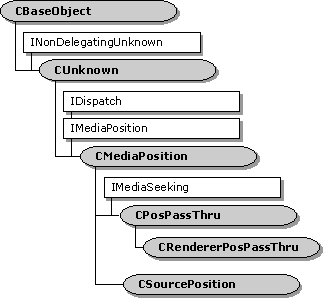

description: The CMediaPosition class handles the IDispatch methods of the IMediaPosition dual interface. ms.assetid: 5e84a2b6-39d4-47a4-93b4-690df12e2d19 title: CMediaPosition class (Ctlutil.h) ms.topic: reference ms.date: 4/26/2023 topic_type:
[The feature associated with this page, DirectShow, is a legacy feature. It has been superseded by MediaPlayer, IMFMediaEngine, and Audio/Video Capture in Media Foundation. Those features have been optimized for Windows 10 and Windows 11. Microsoft strongly recommends that new code use MediaPlayer, IMFMediaEngine and Audio/Video Capture in Media Foundation instead of DirectShow, when possible. Microsoft suggests that existing code that uses the legacy APIs be rewritten to use the new APIs if possible.]

The CMediaPosition class handles the IDispatch methods of the IMediaPosition dual interface.
This class inherits the IMediaPosition interface but does not implement it. It implements IDispatch through the CBaseDispatch class and the DirectShow type library. Do not use this class directly. Instead, use one of the following classes:
| Public Methods | Description |
|---|---|
| CMediaPosition | Constructor method. |
| IDispatch Methods | Description |
| GetIDsOfNames | Maps a set of names to a corresponding set of DISPIDs. |
| GetTypeInfo | Retrieves the type information for the object, which can then be used to get the type information for an interface. |
| GetTypeInfoCount | Retrieves the number of type information interfaces the object provides. |
| Invoke | Provides access to properties and methods exposed by the object. |
| Requirement | Value |
|---|---|
| Header | Ctlutil.h (include Streams.h) |
| Library | Strmbase.lib (retail builds); Strmbasd.lib (debug builds) |